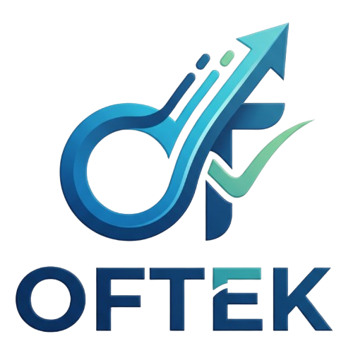

1. Giriş & Hızlı Başlangıç

oftek, ön muhasebe ve operasyonel süreçleri (kasa hareketleri, faturalar, tahsilatlar, personel hakedişleri) anlık takip eden ve gün sonunda tek tıkla resmi çift taraflı (Borç = Alacak) Yevmiye Fişine bağlayan modern, taşınabilir bir işletim sistemidir.
baslat.bat dosyasına çift tıklamayınız!Windows zip içindeki dosyaları geçici salt-okunur bellekte açar ve veritabanı dosyaları kaydedilemez.
Ne Yapmalısınız?
1.
.zip dosyasına sağ tıklayın.2. "Tümünü Ayıkla..." (veya Klasöre Çıkar) seçeneğine tıklayın.
3. Dosyaları flash diskinize veya bilgisayarınızda normal bir klasöre çıkartın.
4. Ardından çıkarttığınız klasördeki
baslat.bat dosyasına çift tıklayarak sistemi başlatın.
Sistemi Başlatma Adımları
oftek klasörüne girin.baslat.bat dosyasına çift tıklayın. Siyah komut konsolu açılacaktır.http://192.168.1.X:8080) kullanabilirsiniz.
📱 Aynı Ağdaki Diğer Cihazlardan (Telefon, Tablet, Laptop) Erişim
oftek, Python'ın dahili web sunucusu motoruyla (0.0.0.0:8080) tüm yerel ağ arayüzlerini dinler. Bu sayede programı tek bir ana bilgisayarda başlattığınızda sistem aynı zamanda yerel bir ofis sunucusu haline gelir.
3 Adımda Telefon veya Tabletten Bağlanma
* Mobilden Giriş: http://192.168.1.X:8080- Dükkanda / Kasada Hareket Serbestliği: Masaya bağlı kalmadan reyon veya tezgahtayken telefonunuzdan hızlı tahsilat veya ödeme kaydı girebilirsiniz.
- Depoda Sayım ve Giriş: Depo veya sevkiyattayken gelen firma faturalarını tabletinizden anında sisteme işleyebilirsiniz.
- Ofis İçi Ortak Çalışma: Birden fazla çalışan aynı anda kendi bilgisayar veya telefonundan ana kasayı ve carileri canlı takip edebilir.
2. Günlük Kasa & Gün Oturumu
oftek sisteminde işlemler günlük oturumlar üzerinden yürütülür. Bu sayede gün içi operasyonel serbestlik sağlanırken, geriye dönük veri kilit mekanizmasıyla finansal bütünlük korunur.
Gün Açma & Kapatma
- Günü Aç: Üst menüdeki [Gün Aç] butonuna basın. İşlem tarihini seçerek günü başlatın.
- Gün İçi Hareketler: Gün açıkken yapılan tüm tahsilatlar, ödemeler ve fişler aktif günün kayıt havuzunda toplanır.
- Günü Kapat (Otomatik Fişleme): Akşam iş bitiminde [Günü Kapat] butonuna tıklayın. Sistem tüm gün içi hareketleri özetler ve tek tıkla resmi bir Gün Sonu Mahsup Yevmiye Fişi oluşturarak günü kilitler.
Hızlı Gelir & Gider Fişleri
Önceden tanımlı veya faturalı olmayan anlık harcamalar (Örn: Kırtasiye, Yemek, Çay-Kahve, Akaryakıt vb.) için [Hızlı Gider], anlık kasa girişleri için ise [Hızlı Gelir] butonlarını kullanarak saniyeler içinde kayıt yapabilirsiniz.
3. Cari Borç Takibi (Firma & Tedarikçiler)
Mal veya hizmet aldığınız tedarikçi firmaların faturalarını, kalan borç bakiyelerini ve yapılan ödemeleri bu ekrandan yönetebilirsiniz.
- Firma Faturası Ekleme:
[+ Firma Faturası Ekle]butonu ile fatura numarası, vade tarihi ve tutarı girin. Firma seçimi yazarak arama (otomatik tamamlama) ile anında yapılır. - Parçalı / Kısmi Ödeme: Borç listesindeki herhangi bir faturanın yanındaki [Ödeme Yap] butonuna tıklayarak faturanın tamamını veya dilediğiniz kısmını nakit ya da bankadan ödeyebilirsiniz. Kalan bakiye canlı olarak güncellenir.
4. Alacak & Tahsilat (FIFO ve Seçimli Dağıtım)
Müşterilerden olan alacaklarınızı takip eder ve tahsilatları iki farklı akıllı yöntemle dağıtabilirsiniz:
5. Personel Yönetimi & Maaş Takibi
Çalışanlarınızın kartlarını, türlerini ve sınırsız ek bilgilerini yönetebileceğiniz merkezdir.
Öne Çıkan Özellikler
- Personel Türleri: Beyaz Yaka, Mavi Yaka, Saha, Yönetim vb. türler tanımlayarak çalışanları gruplandırabilirsiniz.
- Sınırsız Dinamik Ek Bilgi: Her personele dilediğiniz sayıda özel bilgi alanı (Örn: Servis Güzergahı [Metin], Çocuk Sayısı [Sayı], Sözleşme Bitiş [Tarih]) ekleyebilirsiniz.
- Dönemsel Maaş Tahakkuku: Ay başında tek tıkla seçili ayın maaşını personelin bakiyesine hakediş olarak tahakkuk ettirebilirsiniz. Sistem aynı aya mükerrer maaş tahakkuk ettirilmesini otomatik olarak engeller.
- Parçalı Avans / Maaş Ödemesi: Personelin biriken hakedişinden kasa veya bankadan avans ödemesi düşebilirsiniz.
6. Personel Tahakkuk Fişi & Raporlama
Klasik sabit maaş dışında personele yansıtılması gereken prim, yol, yemek, ikramiye, fazla mesai hakedişleri veya yasal kesintiler için özel tahakkuk fişidir.
Dönemsel Tahakkuk Raporu
Sayfanın alt bölümünde yer alan rapor tablosu sayesinde, seçilen Mali Yıl ve Ay filtresine göre hangi personele ne kadar prim, mesai veya hakediş yazıldığını kalem kalem ve toplamlar halinde anında görebilirsiniz.
7. Yeni Yevmiye Fişi Girişi (Desktop-Class)
Masaüstü muhasebe hızında, tam ekran çalışan, çok satırlı serbest yevmiye fişi giriş ekranıdır.
Desteklenen Fiş Tipleri
Fiş girişi üst araç çubuğundaki buton segmentinden fiş tipini tek tıkla seçebilirsiniz:
- MAHSUP: Kasa/Banka dışındaki hesapların virman ve mahsup kayıtları.
- TAHAKKUK: Gider ve borçların dönemsel tahakkuk kayıtları.
- DÜZELTME: Hatalı kayıtların ters kayıt veya düzeltme fişleri.
- AÇILIŞ: Dönem başı veya kuruluş bilançosu açılış kaydı.
- KAPANIŞ: Dönem sonu hesap kapatma kayıtları.
8. Klavye Kısayolları (Seri Veri Girişi)
Fiş ekranında fareye hiç dokunmadan, yalnızca klavye ile ışık hızında fiş girişi yapabilirsiniz:
| Kısayol Tuşu | İşlem | Açıklama |
|---|---|---|
| Tab | İlk Seçeneği Seç & İlerle | Hesap veya açıklama ararken listedeki ilk seçeneği seçip sonraki hücreye geçer. Son alanda basıldığında otomatik Yeni Satır açar. |
| Ctrl + K | Kasa ile Otomatik Dengele | Borç ve alacak arasındaki farkı hesaplar ve tek tuşla 100 Kasa hesabına dengeleyici yeni satır olarak ekler. |
| Ctrl + D veya Ctrl + ' | Üst Satırı Kopyala | Excel benzeri mantıkla bir üst satırın hesap kodu ve açıklamasını anında geçerli satıra kopyalar. |
| F2 | Yeni Satır Ekle | Fişe anında yeni bir boş satır ekler ve ilk hücreye odaklanır. |
| Ctrl + S | Fişi Kaydet | Borç ve Alacak eşitse fişi doğrudan veritabanına kaydeder ve yevmiye defterine bağlar. |
9. Genel Hesap Planı & Mizan
İşletmenizin tüm aktif, pasif, gelir ve gider hesaplarını bu bölümden takip edebilirsiniz.
- Hesap Planı Arama: Hesap kodu veya adı yazarak yüzlerce hesap arasından anlık süzme yapabilirsiniz.
- Excel ile Toplu Yükleme: Kendi hesap planınızı Excel tablosundan tek tıkla sisteme aktarabilir veya sistemden örnek şablon indirebilirsiniz.
- Genel Geçici Mizan: Tüm hesapların toplam borç, toplam alacak, borç bakiyesi ve alacak bakiyesini dönemsel olarak mizan tablosundan izleyebilirsiniz.
10. Mali Raporlar & Ekran İçi Canlı Analiz Merkezi
Sol menüdeki [Raporlar & Analiz] sekmesi, harici dosya aktarımına bağımlı kalmadan tüm finansal hareketleri doğrudan ekran üzerinde anlık filtrelemenizi ve denetlemenizi sağlar.
Öne Çıkan Raporlama Yetenekleri:
- 5 Alt Sekme: Kasa & Nakit Akış, Cari Bakiyeler, Personel Bordro / Hakediş, Genel Mizan ve Muavin Defteri (Hesap Ekstresi).
- 0 Dropdown ile Hızlı Dönem Butonları: [Bugün], [Bu Hafta], [Bu Ay], [Bu Yıl] ve [Tümü] buton segmentleri ile tek tıkla dönem süzme.
- Serbest Tarih Aralığı: Dilediğiniz başlangıç ve bitiş tarihlerini girerek geçmiş veya gelecek analizleri çekme.
- Anlık İstemci Taraflı Arama (Instant Search): Arama kutusuna yazdığınız anda tablo satırları filtrelenir ve özet kartları (Toplam Giriş/Çıkış veya Borç/Alacak) filtrelenen satırlara göre dinamik olarak anında yeniden toplanır.
- Muavin Defteri & Yürüyen Bakiye: Herhangi bir ana veya alt hesabı (100 Kasa, 102 Banka, 120 Müşteriler, 320 Satıcılar vb.) seçerek kronolojik yürüyen bakiyesini satır satır izleyebilirsiniz.
- Sayfa İçi Fiş Detay Modalı: Tablodaki fiş numarasına tıkladığınızda sayfadan çıkmadan çift taraflı (Borç = Alacak) yevmiye fişi detaylarını modal pencerede görebilirsiniz.
- İsteğe Bağlı Excel (.xlsx) ve Yazdırma: İhtiyaç duyduğunuzda tek tıkla istemci tarafında saniyeler içinde zengin Excel (.xlsx) dosyası üretebilir veya yazdırma önizlemesi alabilirsiniz.
11. Sistem & Ayarlar Merkezi (Kırmızı Alan)
Sol menünün en altındaki [Sistem & Ayarlar] sekmesinden genel parametreleri yönetebilirsiniz:
- Kurum / İşletme Kimliği (Profil): Kurumunuzun ticari unvanını, faaliyet türünü (KOBİ, Şirket, Dernek & Vakıf, Kooperatif, Eğitim & Spor Kulübü vb.) ve varsayılan para birimini (₺, $, €) tek tıkla belirleyebilirsiniz. Üst menü başlığı ve tüm raporlar anında seçtiğiniz kurum kimliğiyle güncellenir.
- Personel Türleri: Kurumunuzdaki departman ve çalışan gruplarını (Beyaz Yaka, Mavi Yaka, Saha vb.) ekleyip yönetebilirsiniz.
- Personel Borç Çeşitleri: Hakediş, prim, mesai veya kesinti türlerini tanımlayabilirsiniz.
- Hesap Planı Araçları: Excel'den toplu içe aktarma araçlarına hızlı erişim sağlar.
12. Yedekleme & Güvenli Çıkış
Tüm finansal verileriniz, fişleriniz ve personel kayıtlarınız program klasörünün içindeki tek bir dosyada saklanır:
oftek\muhasebe.db
Yedek Alma Prosedürü
- Programı kapatmak için siyah komut penceresini veya tarayıcı sekmesini kapatın.
oftekklasörünün içindekimuhasebe.dbdosyasını kopyalayın.- Bu kopyayı tarihiyle birlikte (Örn:
muhasebe_yedek_2026_03_19.db) güvenli bir harici diske veya bulut deponuza yapıştırın. - Gerektiğinde bu dosyayı tekrar `muhasebe.db` olarak klasöre yapıştırmanız tüm geçmişi eksiksiz geri yükler.